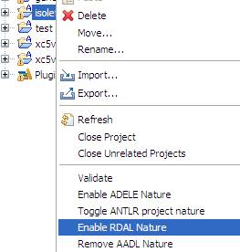
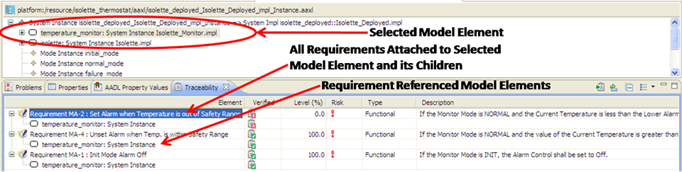
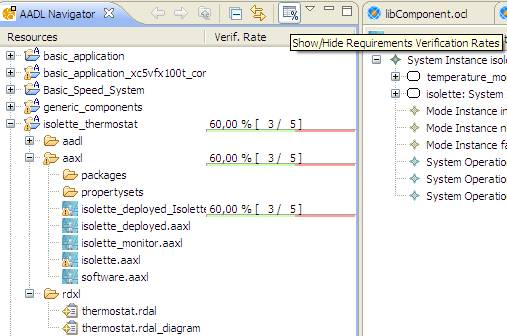
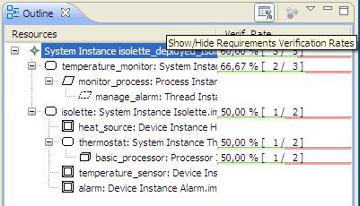

3 Tracing Requirements Specifications
RDALTE includes a builder that automatically verifies requirements expressed with a formal language against their associated
elements of the design. The builder is executed every time a model (design or requirements) is modified and saved in order to
keep the requirements verification status up to date. Design components that do not verify all their requirements are marked
with errors in the Eclipse problems view, and a dedicated set of views is provided to show to the user statistics of requirements
verification by the design.
3.1 Enabling Automated Requirements Verification
Automated verification of requirements for a project is enabled by adding the RDAL nature to the project. This is performed by
right-clicking the project in the workbench navigator and by selecting the "Enable RDAL Nature" contextual menu (Figure 19).

Figure 19: Adding the RDAL nature to a project to enable automated verification of formal requirements.
3.2 Tracing Requirements Verification
The RDAL advanced editing view is a view that adapts automatically to the type of the selected element in the current editor. When
a design element is selected, it transforms itself into a traceability view showing the requirements that the design element must
verify, and whether they are verified or not (Figure 20). The displayed requirements can be double-clicked for opening them in the RDAL
diagram editor, and the traceability view transform itself into the requirements expression and referenced model elements editing
view. From this view (Figure 14), a double click on a referenced model element will open the editor for the element (for AADL,
this is the textual editor) and select the element of interest, thus causing the advanced RDAL editing view to display all its
requirements. This allows quick and easy navigation back and forth between the requirements and their associated model elements.

Figure 20: The advanced RDAL editing view transformed into a requirements traceability view.
The requirements verification traceability view displays columns for the "Verified", "Risk", "Type" and "Description" attributes
of requirements (Figure 20). The table columns can be sorted so that requirements that are not verified can be rapidly identified
and further examined. The view can also be customized to show the Specification, the RequirementsGroup, or the Requirements as
root elements of the tree. Furthermore, requirement verification can be manually launching when automated requirements verification
is not enabled.
3.3 Tracing Requirements Verification Rates
RDALTE embeds two other traceability views that are specific to its integration with OSATE. An extra column is added to the AADL navigator
view to show the requirements verification rate of every element of the navigator (Figure 21). This column can be shown / hidden
by pushing the "Show / Hide Requirements Verification Rates" button in the navigator tool bar.

Figure 21: The requirements verification rates displayed in the AADL project navigator view.
This information is provided with further details (per model element) in the AADL outline view (Figure 22)

Figure 22: The requirements verification rates displayed in the outline view for the AADL object editor.